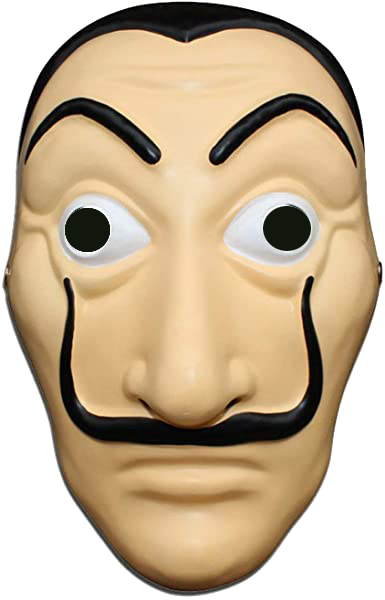
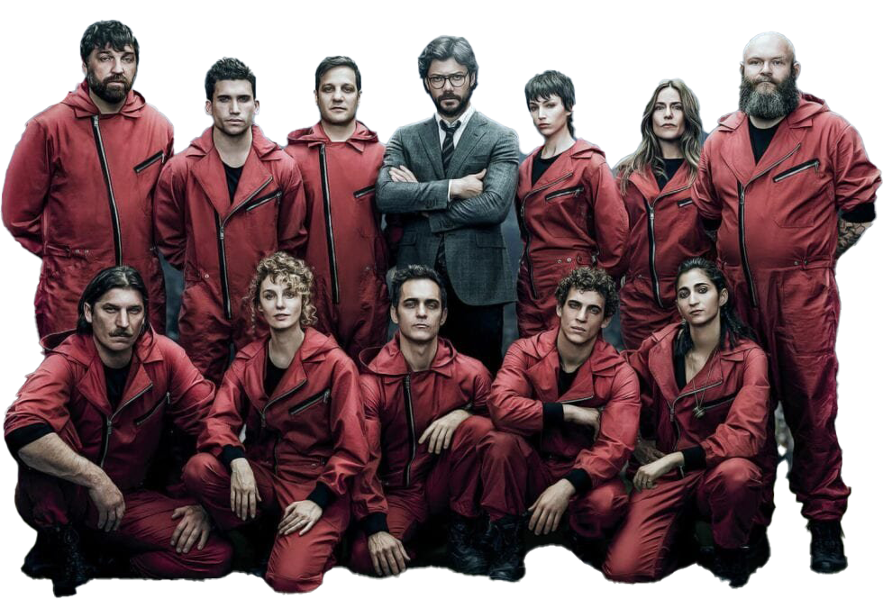

- Pravé meno: neznáme
- Popis: Má sedem detí s rozličnými ženami. Poznal sa s Berlinom.
- Pravé meno: Daniel Ramos
- Popis: Má veľmi ikonický smiech. Pri prvej lúpeži sa dal dokopy s rukojemníčkou Moninkou.
- Pravé meno: Martín Berrote
- Popis: Berlínov najlepší priateľ a spoluzakladateľ plánu na vylúpenie španielskej banky.
- Pravé meno: Sergio Marquina
- Popis: Hlavný organizátor lúpeží v kráľovskej mincovni a španielskej banke.
- Pravé meno: Silene Oliveira
- Popis: Je rozprávačom celého príbehu. Kvôli detinskosti a výbušnej povahe skomplikovala lúpeže.
- Pravé meno: Raquel Murillo
- Popis: Najprv bola hlavná inšpektorka. S Profesorom sa tak zblížila, že sa pridala k lúpežníkom.
- Pravé meno: Mirko Dragić
- Popis: Veľmi emocionálny homosexuál s čistým srdcom bol najlepší kamoš s Nairobi.
- Pravé meno: neznáme
- Popis: Pracoval ako nájomný vrah. Pomáhal profesorovi zvonka.
- Pravé meno: Mónica Geztambide
- Popis: Meno má po Štokholmskom syndróme (keď sa rukojemník od strachu naviaže na svojho únoscu).
- Pravé meno: Andrés de Fonollosa
- Popis: Namyslený, drzý a necitlivý, no veľmi dobrý vodca a hovorca. Profesorov brat.
- Pravé meno: Aníbal Cortés
- Popis: Najmladší a teda najlabilnejší člen partie má výborné technické zručnosti.
- Pravé meno: Ágata Jiménez
- Popis: Zlodejka, matka, feministka, leaderka. Falšuje peniaze.
